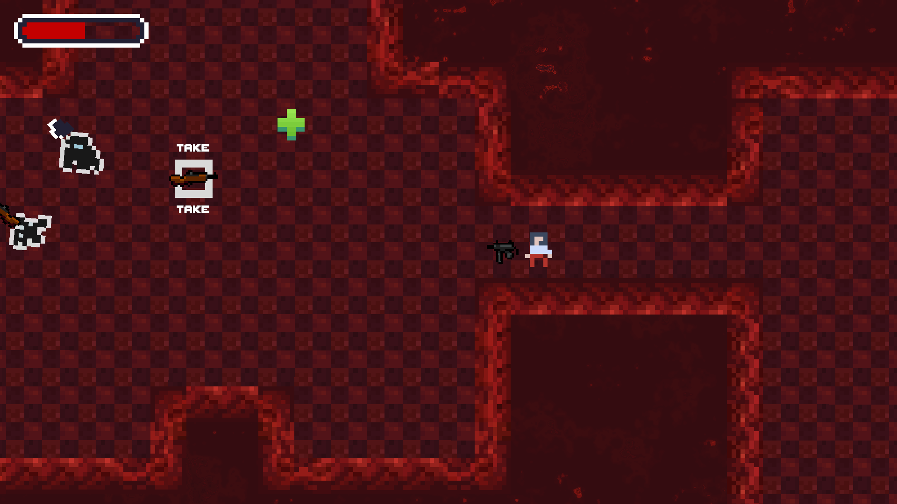
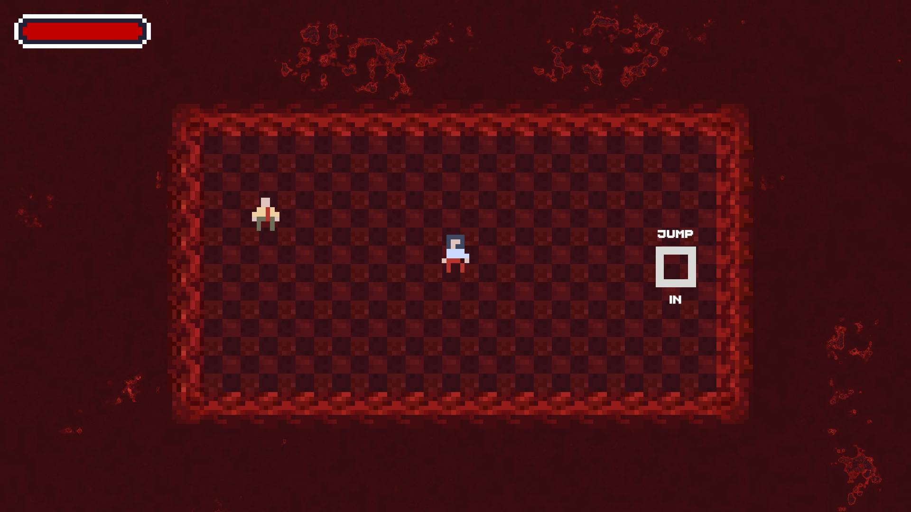
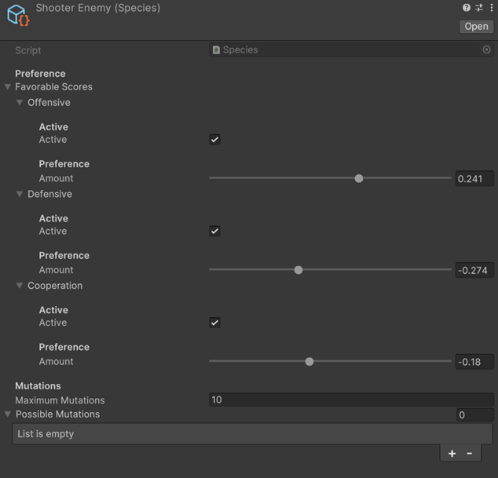
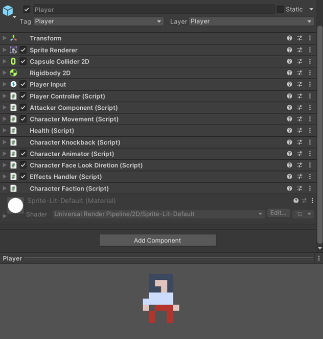
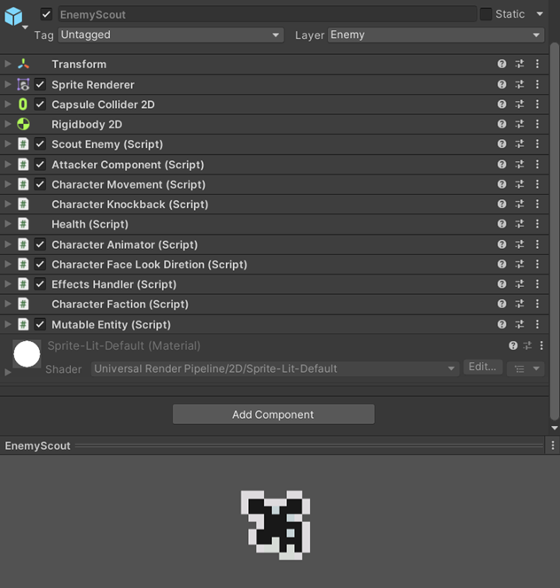
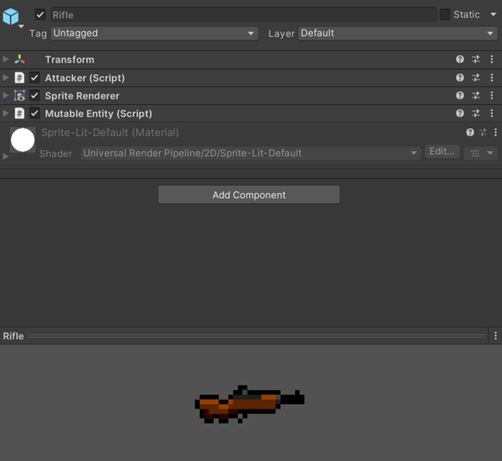
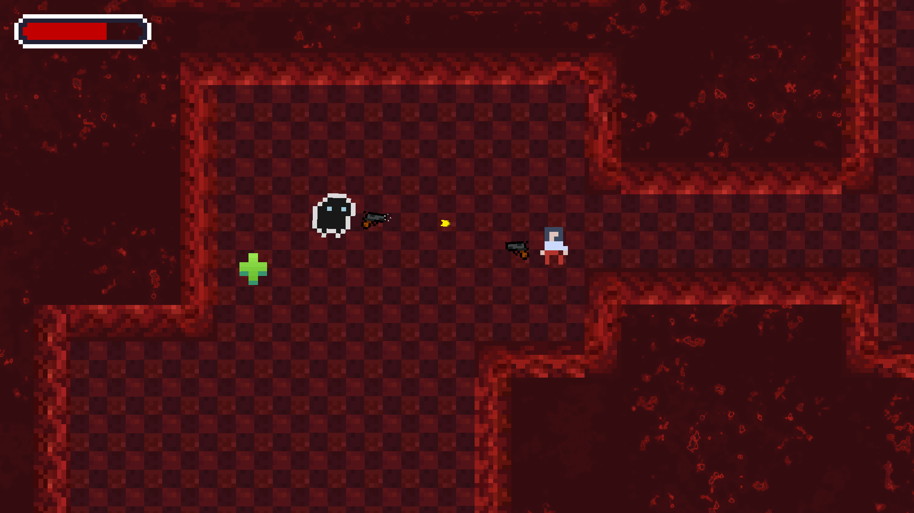
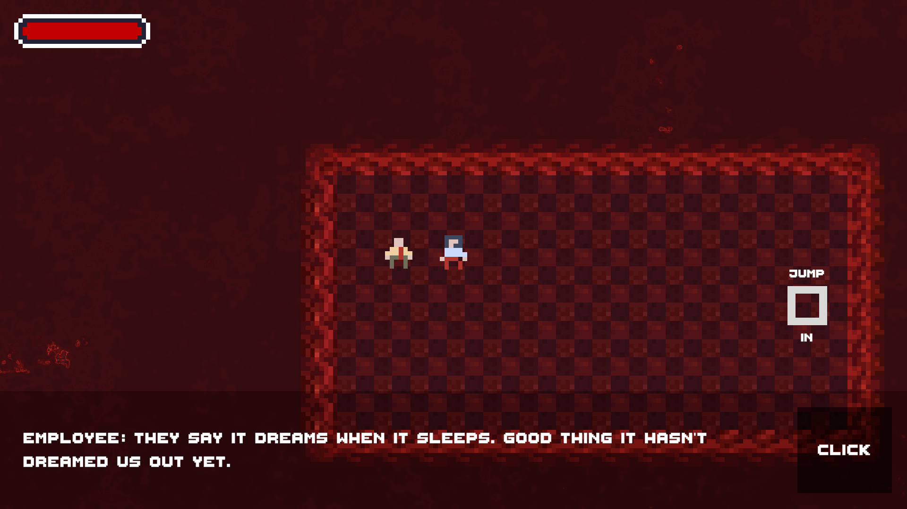
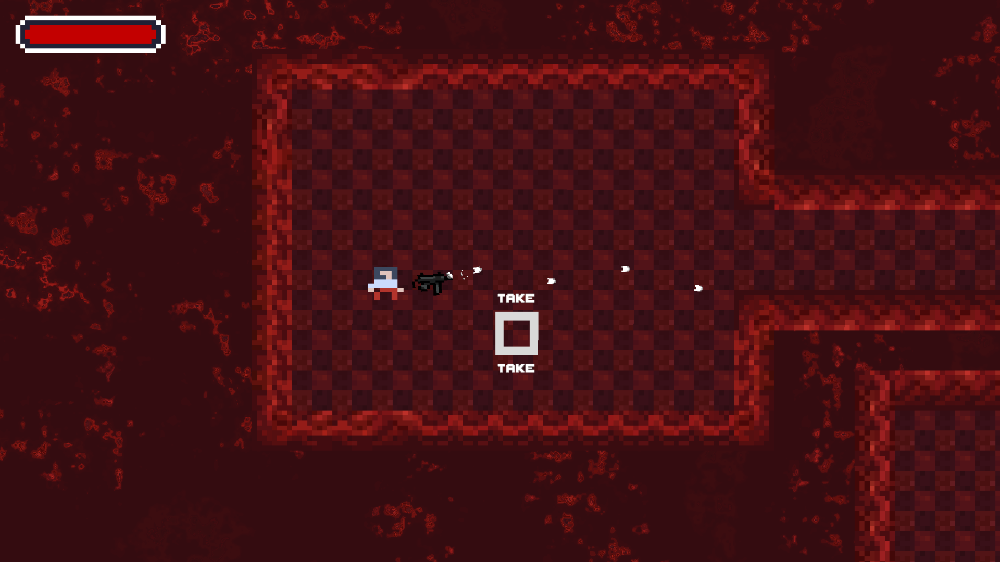

Corpus
Links
Project Description
Corpus is a top-down roguelike shooter where the levels are fleshy, the enemies are weird, and the organization funding this whole operation refuses to answer any of your questions.

This was originally supposed to be a submission for the 57th Ludum Dare game jam, but I wasn't able to finish it in time, and so I took a few extra hours to try getting it into a playable state.

Even though the current playable version seems very barebones, there are a lot of thing going on under the hood. I'll talk about the mutation system, and the composition approach I took while building the game.
Mutation System
Everything in the game can mutate, be it weapons, npcs, enemies, and even the entire dungeon you play in. Mutations are driven by the player's actions throughout a run.
This system is in the game, and it works, but due to the time constraints I put for myself to finish the game, and the difficulty of authoring, and setting up the mutations in game (I kind of made the entire process difficult here), I opted to not add any.

But even though the system doesn't have any effect on the game currently, from the little testing I did while working on it, these mutations can create some really interesting scenarios, but you'd have to be very careful, and test very frequently to create something fun, predicatable and engaging.
Modular Component and Composition System
Every component is made to work with any "agent" (Called "character" internally) by agent I mean a character that thinks and executes logic (player, enemies, npcs, weapons, etc...).
The same weapons that you use during your run, are also used by the enemies, the same components the player uses to move, aim, shoot, etc... are also used by the enemies.
I wanted to try this composition approach as I was really inspired by the way godot's nodes work, and how they encourage this composition approach to building stuff. Anything can be created by composing these components and tweaking their properties.
Player

Enemy

Weapon

Screenshots


